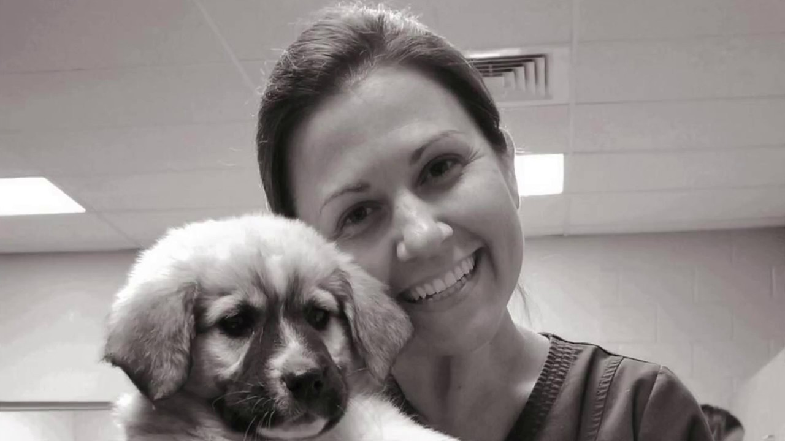
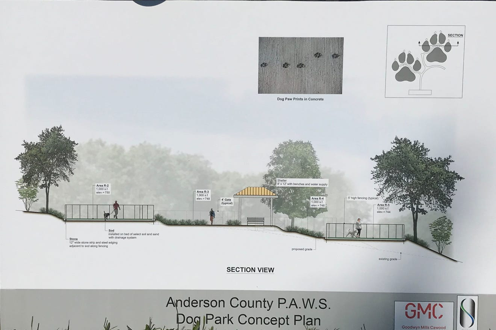

Interviews
These interviews include the director and lead vetrinarian of PAWS and a friend of mine who was recently in the market for a rescue dog. I have another interview hopefully in the works but couldn't fit it into the time frame (will be adding later).
Dr. Kim Sanders
Dr. Kim Sanders is the lead vetrinarian and director at PAWS Animal Shelter. Since starting at PAWS 4 years ago, she has helped PAWS responsibly save 90% of aniamls coming into their facility, in comtrast to the 60% that were being euthenized just 4 years earlier.
The interview with Dr. Kim Sanders was so informative and helpful to my overall project. I learned about a variety of services that were no where on the website, as well as a deep insight into the different audiences they cater to and the primary goals of PAWS. All of this has been very influncial in my research and my brand redesign.
A little info about PAWS & the services they provide.
PAWS is a county-funded animal shelter whose main goal is to keep animals in their home and eduate the community. They provide a vairety of services to aid in these efforts, including a food bank and a spay and neuter clininc, geared towards fixing community cats to reduce stray cat populations.
Last year PAWS took in 8,500 animals from a variety or sources. At any given time they have roughly 150 animals in their shelter, 20-40 of them cats. Aside from the ocassional stray, the majority of their animals come from animal control and surrendered pets. Because the main purpose of PAWS is not adoptions, they try to limit the amount of animals they bring into the shelter. They provide resources to families before taking surrenders, and they no longer accept stray litters of kittens if they can avoid it. Preparing an animal for adoption costs the shelter around $300 to prepare an animal for adoption. The prices for animals in the shleter range from free of charge - $35. Clearly, adoptions is not a money maker for the shleter, they are much more concerned with keeping animals in their loving homes and placing animals in new loving homes.
Another service that PAWS provides is through education to other shelters in the area. They spend lots of time training their employees as well as other shelter employees on proper care of animals and how to responsibly save the most animals possible. They do this by hosting training events at their shelter.
PAWS Community Park
PAWS Animal Shelter sits on 12 acres of land that haven't been utilized in the past. They are currently in the process of building a community dog park. It will consist of 10 enclosed areas for dogs, as well an an ampetheater for community events. They will also have a walking track throughout the park. The entire goal of the park is to be a center for the entire community to come together. Pet owners can come to spend time with their pets and anyone is welcome to borrow a shelter animal and love on them a bit.
Website Needs
These are the needs that Dr. Sanders specifically mentioned as needs for the future website.
- Location for available adoptable animals
- Place for lost and found pets
- Simple way to donate
- Information about available services
- Volunteer hub
A Few Words to Descibe PAWS
- Compassion
- Education
- Community
- Protection
- Love
Cailee Hochrine
Cailee was a great example of a customer who is looking for an animal to adopt, which is one of the many audiences that PAWS is attempting to reach. I learned about what she enjoyed from other pet adoption websites, as well as what she was looking for beginning her search.
Cailee was recently looking to adopt a rescue animal and did a good bit of research before deciding where to go in her search. She looked at a variety of local shelters and adoption websites. We specifically spoke about the Greenville Humane Society, Petango.com, and PetFinder.com. She hadn't actually looked through PAWS website so during our interview I had her go to the current site and give me her thoughts. Out of all of the sites she visited, she found PetFinder.com to be the most user friendly. They had more information available about each animal. They even had a section for animals that came from other homes or had been fostered for more information about thier personality and temperment to be shared. This allowed Cailee to get a good idea about what kind of dog she would be bringing into her home. This additional information was very important to Cailee. She already has an old dog in her home with health issues, so there is a bit of a requirement for what kind of dog she could add to her family.
A few factors that went into looking for her future pet included whether or not the dog had been spayed/neutered, whether ot not they were up to date on shots (her current dog is very succeptible to heartworm issues), if they were good with other dogs, and the price of adoption.
Looking through these websites, Cailee found that the websites that had additional information where the most benefitial. She also enjoyed the drop down options such as age, sex, etc. One thing she would have loved to see is infinite scroll, so that it would be easier to see all the available dogs at once without having to click through multiple pages.